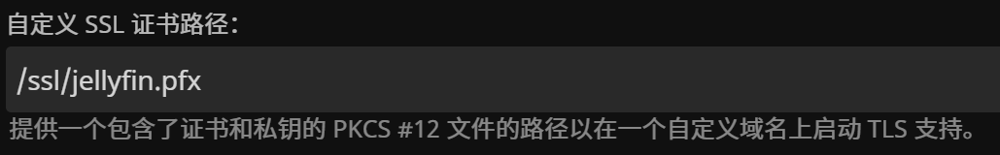
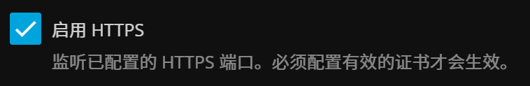
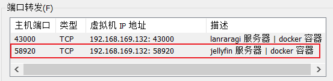
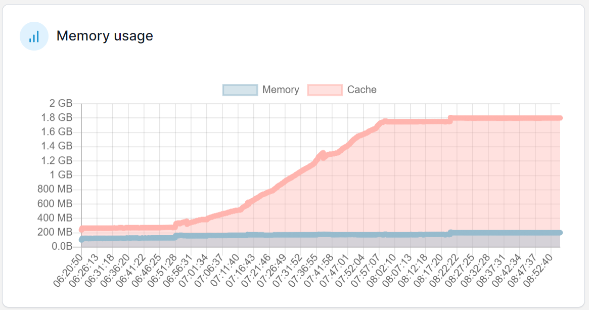

在 Docker 中安装 Jellyfin
序言
Jellyfin 是一个开源的媒体服务器。我的用法是：在电脑上使用 qBittorrent 下载每日新番，启动 Jellyfin，然后在 iPad 上通过客户端看番。
之前在 Windows 主机上安装了便捷版的 Jellyfin，因为 Linux 虚拟机没法使用显卡，无法硬件转码。后来发现，Android 和 IOS 的客户端支持大部分编码，服务器无需提供转码服务。正好我已经熟悉了 Jellyfin 的使用和配置，可以将 Jellyfin 迁移到 Docker 上去了。
虽然 Jellyfin 软件是跨平台的，但是它的配置还是 OS-dependent 的，更何况我是要从 Windows 迁移到 Docker 中去。尽管有一个第三方脚本可以使用，但保险起见，我还是重新配置了一遍，反正也不多。
这篇文章主要讲解了如何用 Docker 安装 Jellyfin、期间碰到的问题及其解决方案。
Jellyfin 安装
先创建两个容器卷：
1 | docker volume create jellyfin-config |
Docker Compose:
1 | version: '3' |
-
镜像要指定版本，
10.8.13是目前最新稳定版，而之后的版本都有unstable一词，最好别用latest； -
8096是默认的 HTTP 端口，8920是默认的 HTTPS 端口； -
Jellyfin 使用如下路径存储数据：
目录 说明 路径 Data Directory 存放 Jellyfin 所有数据的目录，通常用来被其他目录引用 环境变量 JELLYFIN_DATA_DIR指定Configuration Directory 存放配置文件 环境变量 JELLYFIN_CONFIG_DIR指定；如果没有，则使用<Data Directory>/configCache Directory 存放服务器缓存 环境变量 JELLYFIN_CACHE_DIR指定；如果没有，则使用<Data Directory>/cacheLog Directory 存放日志文件 环境变量 JELLYFIN_LOG_DIR指定；如果没有，则使用<Data Directory>/logDockerfile 中指定了这些环境变量：
1
ENV DOTNET_SYSTEM_GLOBALIZATION_INVARIANT=1 LC_ALL=en_US.UTF-8 LANG=en_US.UTF-8 LANGUAGE=en_US:en JELLYFIN_DATA_DIR=/config JELLYFIN_CACHE_DIR=/cache JELLYFIN_CONFIG_DIR=/config/config JELLYFIN_LOG_DIR=/config/log JELLYFIN_WEB_DIR=/jellyfin/jellyfin-web JELLYFIN_FFMPEG=/usr/lib/jellyfin-ffmpeg/ffmpeg
因此，
/config和/cache包含了 Jellyfin 服务器的所有数据 ，而这两个目录又分别挂载到jellyfin-config和jellyfin-cache； -
/mnt/hgfs/jellyfin-media:/media:ro：将本机的媒体文件挂载到 docker 中，路径随意； -
/opt/docker/jellyfin_ssl/jellyfin.pfx：用来配置服务器的 SSL 证书，之后会讲； -
TZ=Asia/Shanghai：设置时区，使得日志的时间和本机的一致；
Jellyfin 设置
因为是重新安装，所以配置都要从头走一遍，这里只讲一些重点。
服务器 | 用户
不允许转码：就算客户端不支持编码，也不能用服务端的软解，不然压力太大了。
把每个用户的下面两个选项去掉；

对于『允许播放需转换但无需重新编码的视频』这个选项，许多文章把这个选项也去掉了，但好像没什么影响，就留着吧。
高级 | 联网
选择之前挂载的 jellyfin.pfx 文件作为 SSL 证书（如何生成该文件见下文）：

勾选『启用 HTTPS』，然后重启容器。

没必要开启『强制 HTTPS 』，因为防火墙最终只会允许局域网其他设备访问 HTTPS 端口；本机还是可以通过 HTTP 访问 Jellyfin。
SSL 证书
首先要有密钥 jellyfin-priv-key.key 和证书 jellyfin.crt（参考上一篇文章）
然后使用以下命令生成 .pfx 文件即可：
1 | openssl pkcs12 -export -out jellyfin.pfx -inkey jellyfin-priv-key.key -in jellyfin.crt -passout pass: |
局域网设置
再次说一下我的网络环境：
Windows 主机，通过 VMware 安装了 Linux，Docker 运行在该虚拟机上。
主机和其他设备共享家庭内网。
之前在 Windows 上运行 Jellyfin，我直接允许 Jellyfin 访问专用网络（家庭内网）。即防火墙规则是授权给 Jellyfin 这个可执行文件，而不是某个端口。
现在是在 Docker 中运行，要做如下更改：
-
添加虚拟机 NAT 映射，将 Linux 的 58920 映射到主机的 58920 端口；

-
新增防火墙入站规则：
58920/tcp，专用网络； -
各个客户端重新连接新的服务器；
Windows 的 Jellyfin 开放 58920 端口，更换为 Docker 版后也是这个端口，即都可以在浏览器上通过 https://主机IP:58920 访问 web 客户端。这样可以“骗过” Google Password Manager，直接使用以前的账户和密码。
一些 Bug
字体问题1
创建好容器后，进入容器，执行以下命令：
1 | apt update && apt install fonts-noto-cjk-extra |
然后重启容器。
不然的话，媒体库封面图的中文会变成方块。
字体问题2
包含 ASS 字幕的 MKV 在播放时，字幕都是方块。问题还是出在缺少字体。
在『服务器 | 播放』中设置『备用字体文件路径』，并『启用备用字体』。

在这个目录内，放入一个 woff 字体。
以 Windows 系统自带的微软雅黑为例：
进入 C:\Windows\Fonts ，搜索 yahei，复制该字体，得到三个 ttc 文件。我们要将 ttc 转换为 woff。使用如下 Python 代码：
1 | pip install fonttools |
1 | from fontTools.ttLib import TTFont |
符号链接
通过 mklink 命令可以在 Windows 上创建链接。在 Windows 上运行 Jellyfin 时，为了不让 Jellyfin 修改媒体目录， 我使用 walk_while_link 函数 给每个视频文件创建符号链接。但是虚拟机的共享文件夹可以设置只读，volume 也可以设置只读，因此使用 Docker 后没必要这么做。
更要命的是，这么做会导致视频无法播放，Jellyfin 读媒体数据时会报错。—— 我怀疑这是符号链接的锅，因为很多讲 NAS 的文章都使用硬链接，而不是符号链接。但我不喜欢用硬链接，更何况是在 Windows 上。
但是给文件夹创建符号链接是可以的。比如说共享文件夹为 jellyfin-docker-media，我们可以通过给其他路径的 films、animes 文件夹制作符号链接，将它们都汇总到 jellyfin-docker-media 下。这相当于加了一层封装，减少了虚拟机共享文件夹的数目。
实际上我就是这么做的，Docker-compose 中的 /mnt/hgfs/jellyfin-media，就是主机的 jellyfin-docker-media 共享文件夹。
SSL 证书过期
这个 bug 更新于 2025-03-13
复现过程：
1️⃣通过主机 IP 访问网页，出现『选择服务器』界面，点击后显示无法连接。此时浏览器正常显示 —— 理应显示连接不安全。
2️⃣通过 Jellyfin 安卓版访问，无法连接。此时服务器日志如下：
1 | [INF] [82] Jellyfin.Api.Auth.CustomAuthenticationHandler: "CustomAuthentication" was not authenticated. Failure message: "Invalid token." |
—— 依旧看不出问题。
3️⃣通过虚拟机 IP （HTTP 端口）访问网页，可以正常登录 —— 说明 Jellyfin 服务器工作正常。
4️⃣通过虚拟机 IP （HTTPS 端口）访问网页，浏览器显示连接不安全，点开一看，证书过期了。
对于过期的 SSL 证书，解决方法为：不需要创建新的服务器密钥和 CSR，只需要 CA 重新签字即可。此外，Jellyfin 还要求额外生成 .pfx 文件。
Docker 知识
通过安装 Jellyfin，我在实操中加深了对 Docker 的理解。
EXPOSE
Dockerfile 中的 EXPOSE 关键字，我一直以为只有用了这个关键字，启动容器时才可以映射对应端口，实则不然。
The
EXPOSEinstruction informs Docker that the container listens on the specified network ports at runtime. You can specify whether the port listens on TCP or UDP, and the default is TCP if you don’t specify a protocol.The
EXPOSEinstruction doesn’t actually publish the port. It functions as a type of documentation between the person who builds the image and the person who runs the container, about which ports are intended to be published. To publish the port when running the container, use the-pflag ondocker runto publish and map one or more ports, or the-Pflag to publish all exposed ports and map them to high-order ports.
上面两段话摘录自官网的文档。EXPOSE 只是一个文档性质的声明，而 -p 才是真正的端口映射，并且可以随意地映射容器的端口，没有限制。
因此，我在『在 Docker 中部署 Nginx，并在局域网配置 SSL 证书』 的做法是无意义的，没必要为了 EXPOSE 新创建一个镜像。
2
EXPOSE 443
Cache Memory
在 Portainer 的统计中，可以看到内存使用分为『Memory』和『Cache』。这两个分别是什么意思？哪个才是目前占用的内存？

简单来说，『Memory』是目前占用的内存，而『Cache』是曾经使用过的内存。Memory Cache 是 Docker 的一个属性，其值等于 /proc/meminfo 中 Inactive(file) 的值。
Inactive(file)— The amount of file cache memory, in kibibytes, that is newly loaded from the disk, or is a candidate for reclaiming.